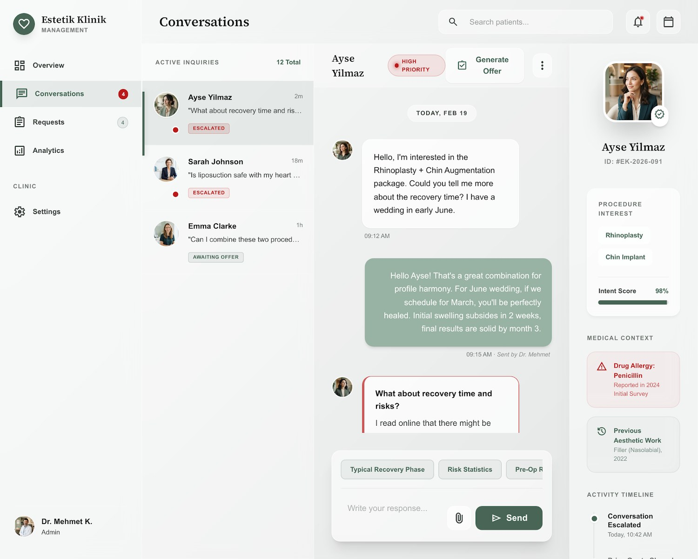
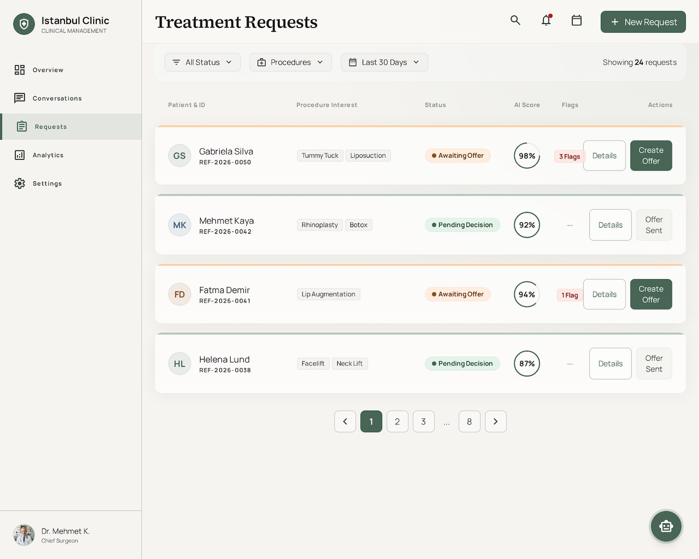
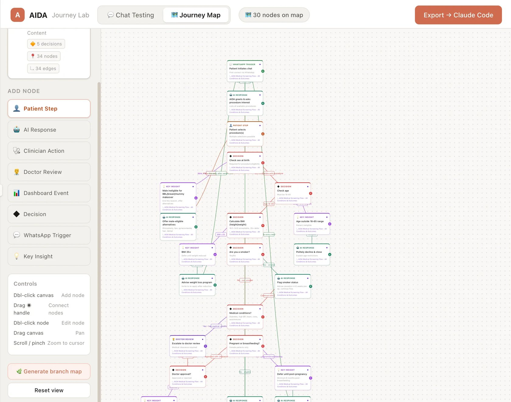
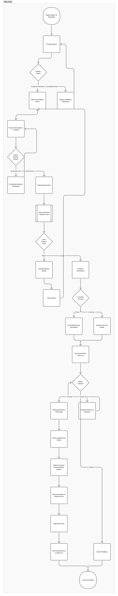
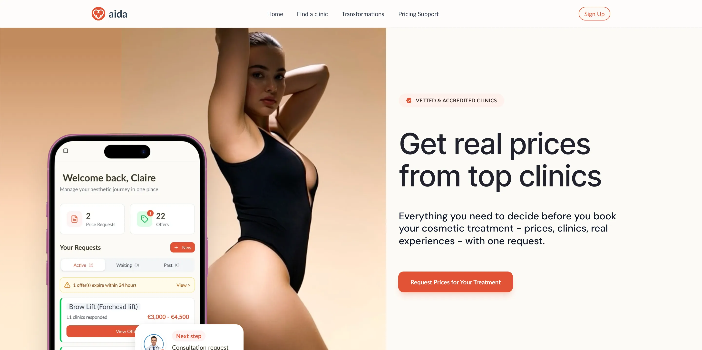

Context
One coordinator, an unmanageable amount of data.
Medical tourism is booming, and cosmetic clinics were absorbing that growth on the shoulders of a handful of coordinators. Every overseas patient means a surgery date, a theatre slot, a surgeon's calendar, flights and recovery stays, a consultation to book — and a long, anxious conversation running in the background across time zones and languages.
AIDA is a two-sided product: patients get guided, conversational support across their whole journey, while clinics run every conversation, booking and timeline from one place. My brief wasn't to add more tools — it was to take an overwhelming amount of data and make it feel calm and legible.
The Problem
The mess of data I was designing against.
Every one of these lived in a different tool, spreadsheet or head — and all of it landed, at once, on one coordinator.
Flights, transfers, hotels and recovery stays — every one tied to a surgery date that can still move.
A limited number of theatre slots to schedule across several surgeons and procedures without collisions.
Each surgeon's consultation hours and operating days, shifting constantly as cases move.
Every patient at a different stage, each needing the right nudge at exactly the right moment.
Matching a patient to the right surgeon, at the right time, in the right language.
Hundreds of WhatsApp threads answered by hand, day and night — the coordinator as a human chatbot.
The Design Challenge
Make all of it feel like one calm screen.
The hard part was never adding features — it was subtraction. A clinic drowning in data doesn't need a denser dashboard; it needs to glance once and know what matters. I designed AIDA around a single principle: less is more.
Muted pastel colour carries meaning without shouting — red for escalated, green for new, amber for awaiting. Glassmorphic surfaces let dense information sit lightly on the page instead of stacking into walls. Whitespace does the work heavy dividers used to. And AI runs underneath it all — triaging, scoring, drafting — so the human only ever sees the few things that genuinely need them.
"Clarity wasn't a screen I designed. It was everything I managed to take off the screen."
The Command Centre
One glance, the whole clinic.
The overview answers the coordinator's first question of the day — what needs me? Five calm tiles across the top count only what's actionable: conversations escalated for a human reply, new requests awaiting an offer, offers pending a patient's decision, post-op patients AIDA is monitoring, and bookings coming up. Underneath, three live columns — escalated chats, new requests, and upcoming bookings synced straight from the calendar — turn a day's worth of scattered data into a single readable page.
Overview. Muted pastel status colour, glassmorphic tiles and generous whitespace turn six data streams into one quiet, scannable screen.
Conversations · replacing the coordinator
The chat the coordinator used to answer by hand.
This is where most of the chaos lived — long, high-stakes conversations across time zones and languages, running around the clock. AIDA now carries them. It drafts replies grounded in each patient's real context — procedure interest, an intent score, flagged drug allergies, prior aesthetic work — and the coordinator approves, adjusts, or takes over. Suggested next messages (typical recovery phases, risk statistics, pre-op prep) keep answers accurate, and a high-priority flag pulls a human in the instant confidence drops.

Conversations. Patient context, medical flags and an intent score sit alongside the thread, so a human never restarts a conversation the AI already began.
Requests · triage
Every enquiry, scored and sorted.
Behind the conversations sits the pipeline. Each treatment request is scored by AI intent, tagged with procedure interest, flagged for anything that needs a second look, and sorted by exactly where it sits — awaiting an offer, or pending the patient's decision. The coordinator works a ranked, filterable list instead of a bottomless inbox, and turns a ready patient into an offer in a single click.

Requests. AI score, status and flags replace an inbox with a prioritised queue — the coordinator always knows who to act on next.
The Pivot
When complexity multiplied overnight.
When we pivoted AIDA from a marketplace into two distinct products — a community platform and a clinic-facing AI patient agent — the data problem multiplied. The agent was no longer just guiding discovery; it was triaging patients, handling medical disclosures, and managing booking and post-op logic across borders.
Every conversation branch now carried operational, ethical and clinical risk. We couldn't afford to "learn from production" when real patients and surgeons were involved.
Designing an agent means designing the conversation, not the screens. So I built the AIDA Journey Lab — a visual environment for designing and testing agentic AI personas. On one canvas I mapped every turn of the patient journey: the WhatsApp opening, AIDA's responses, the patient's choices, and the medical decision gates that keep the persona safe — sex-at-birth eligibility, age, BMI, smoker status, medical conditions, pregnancy — each branching to the right response, a clinician escalation or a doctor review. I chat-tested the persona's dialogue against diverse patient histories, tuned its tone and guardrails, then exported the validated flow straight to Claude Code to build. It's how I designed AIDA's conversation and trained its behaviour — turning a scripted chatbot into a clinically-safe agent before a single real patient was involved.

The lab I built. Every patient step, AI response and medical decision gate on one canvas — with live chat-testing and one-click export to Claude Code.

The end-to-end journey I designed — from the first WhatsApp message through triage, clinic match, consultation and booking, to travel, post-procedure care and feedback. Scrolls on its own
This is my edge with AI: I didn't just use it to design the product — I used it to build a tool that improved how I designed the product itself.
The Behaviour · designing how the agent thinks
Every reply is a designed decision.
The patient never sees a dashboard — they see one message at a time. The clinician has no time to read every chat — they see what it distils into. So the real design surface is the agent's judgment: diagnosing what each patient is optimising for, earning trust it can prove, and writing the result to a clinician who has minutes, not hours. One designed exchange, annotated.
A price-shopper and a surgeon-seeker send the same first message. The agent's first designed move is finding out which one it's talking to — and the entire journey, tone and content adapt to the answer.
Patients' only proof of a surgeon used to be social media — full of fake reviews. So we built a patient library: real outcomes, shared with each patient's consent, verified by the clinic. The agent doesn't reassure; it shows.
Every stage opens with what's next and how long it takes. Momentum is designed, not hoped for — the conversation's success is measured at the patient's thumb.
Clinicians juggle dozens of cases with very little time. So each exchange distils into their dashboard as intent, stage and an auto-drafted summary — I was designing the clinician's next 10 seconds as much as the patient's next reply.
What we replaced · the failure that shaped the design
The long form that lost 6 in 10 patients.
Before the agent, coordinators sent patients long medical forms — accurate, complete, and completed alone. Patients stalled mid-form and vanished; by the photo step, 61% never finished. The fix wasn't a better form. It was recognising that a form is a monologue — and rebuilding the same questions as a staged, guided conversation with help at every step.
Guardrails · where the agent stops
Knowing when not to be an AI.
The most important behaviours I designed are the ones where AIDA hands over. Every rule below was mapped as a decision gate in the Journey Lab and chat-tested before release — because in a medical product, the agent's confidence is a safety feature, not a personality trait.
Age, BMI, smoker status, pregnancy, listed conditions — any flag stops the script.
Fear, second thoughts, "I'm not sure I should do this" — the agent stops persuading, acknowledges, and brings in a human.
Any symptom language after the procedure escalates immediately. The agent never triages a complication.
"The hardest part of designing an agent isn't making it sound human. It's deciding when it must stop acting like one."
The Patient Side
A whole journey, inside a conversation.
On the patient side there's no app and no account — just WhatsApp. The AI guides people from first enquiry through screening, procedure education, photo assessment, pricing and booking, then follows up after. Testing showed people preferred no extra download, and that visual guidance dramatically lifted confidence during photo uploads.
The patient experience in motion — a guided, WhatsApp-native conversation that never asks someone to leave the app they already use.
What I Built
End-to-end product design across both sides.
Clinic command centre
- Overview command dashboard
- Escalation & handoff workflows
- AI-scored request pipeline
- Consultation & OR-slot booking
- Surgeon & coordinator timelines
- Post-op tracking
Conversations & AI
- AI-drafted patient replies
- Context & medical-flag panels
- Intent scoring & prioritisation
- Suggested-reply system
- Confidence-based escalation
Design foundations
- "Less is more" visual system
- Muted-pastel status language
- Glassmorphic component library
- Travel & logistics views
- Built & prototyped with Claude Code
Impact & Results
Measurable outcomes across every part of the journey.
Measured in platform analytics and clinic-side data, before vs. after each release.
Before the Pivot
Where it started.
The original AIDA was a patient-facing marketplace — a place to find, compare and contact cosmetic clinics. The pivot transformed it into a two-sided AI platform, shifting the product from discovery to guided care.

The earlier marketplace product — the foundation the guided-care platform was built on.
Where It's Headed
From AIDA to Nia.
With enough clinical partners to validate the model at scale, the product is being rebranded from AIDA to Nia — a name and identity built for the next phase.
The next chapter re-creates the marketplace from the ground up — connecting patients to vetted clinics with the same AI-assisted confidence — alongside a dedicated AI support layer that stays with patients through treatment, recovery and aftercare.
Marketplace, rebuilt
Vetted-clinic discovery re-created on top of a validated, trusted model.
Clinical partnership tooling
The command centre grows into a fuller operations layer for partner clinics.
Always-on patient AI
A guided companion through treatment, recovery and aftercare.
Nia carries AIDA's clarity-and-safety principles forward into one connected ecosystem: discovery, partnership tooling and ongoing patient support.